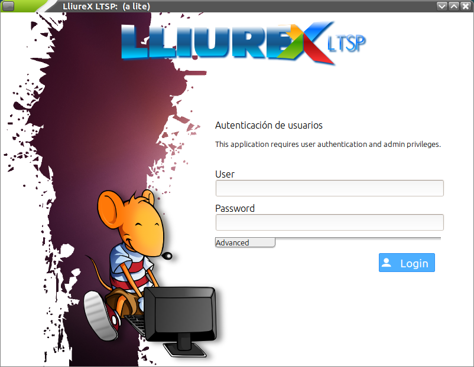
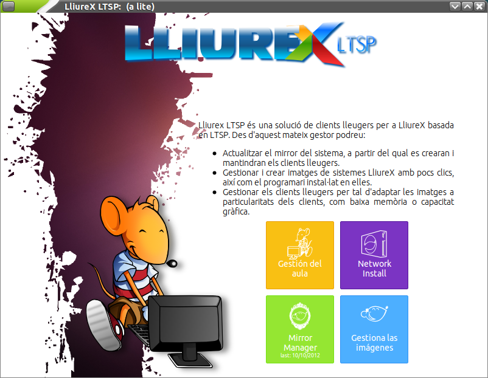
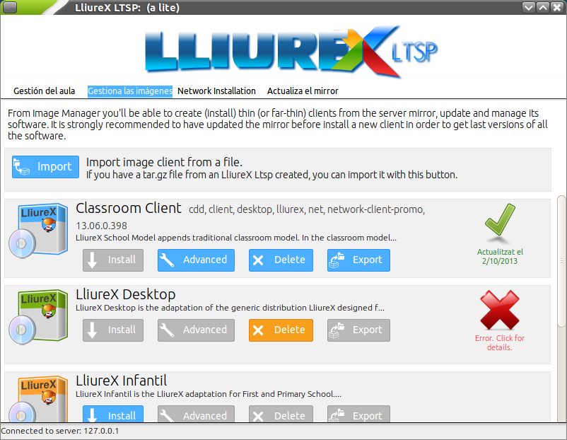
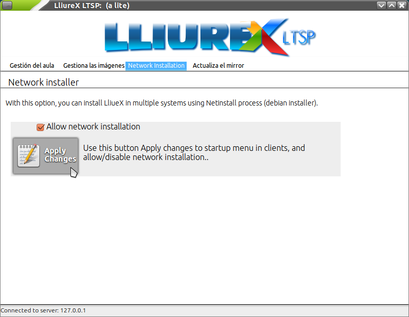
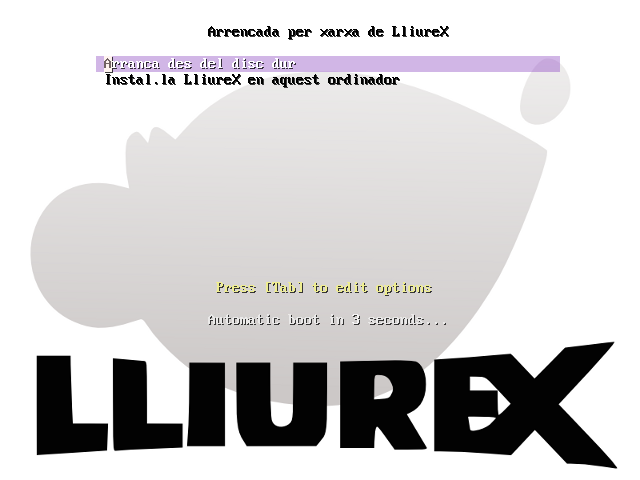
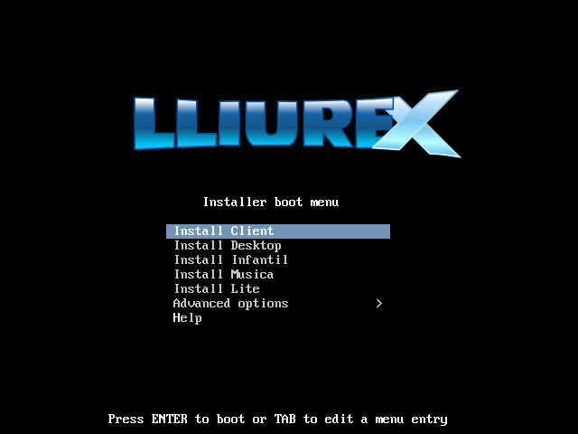
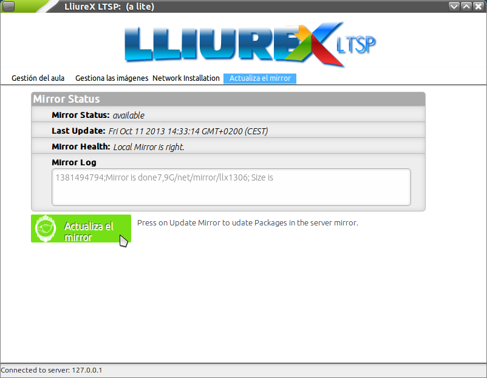

Tabla de Contenidos
Tema anterior
Próximo tema
Gestión del aula con LliureX LTSP
Gestión del aula con LliureX LTSP
Aunque en ocasiones se hable de imágenes tanto para el directorio chroot como para el archivo imagen (.img), debe quedar claro que el primero es la versión manipulable (sin comprimir) del segundo (comprimido). Por lo tanto, cada vez que queramos alterar la imagen de los clientes, habrá que actuar sobre el directorio chroot para luego generar el archivo imagen.
Así pues, en LliureX LTSP disponemos de varias operaciones que nos permitirán gestionar las imágenes de los clientes ligeros y semi-ligeros:
Nota
Un sabor de LliureX es cualquiera de las diferentes opciones que tenemos para instalar: Escriptori, Infantil, Aula, etc. Empleamos dicho término para diferenciarlo de versiones de LliureX: 13.06 (Pandora), 12.06 (Nemo), 11.09 (Marty), etc.
Para la configuración de LliureX LTSP es necesario tener el servidor:
Puede acceder a LliureX LTSP desde el menú de Administración de LliureX, seleccionando Gestor de LliureX LTSP.
La pantalla de entrada es la siguiente:
Deberá introducir un usuario y contraseña con permisos de administración. Una vez validado se le presentará la siguiente ventana:
Desde ella podrá realizar las siguientes operaciones:
En la sección de Gestión del aula se pueden configurar los siguientes parámetros:
Importante
Para que toda configuración nueva tenga efecto será necesario aplicar los cambios con el botón Aplicar.
LliureX LTSP permite la instalación, personalización, borrado, exportación e importación de imágenes de clientes ligeros.
Veamos cada una de estas posibilidades con algo más de detalle.
El proceso de instalación de imágenes consiste en la construcción, en un directorio chroot, de un sabor de LliureX (Escriptori, Infantil, Aula, etc.) completo. Esto nos va a permitir la modificación, actualización y preparación para la generación del archivo imagen (.img) que será cargado por los clientes definidos.
Este proceso es laborioso y suele durar un mínimo de 2 horas. Sin embargo, esto sólo se debe realizar la primera vez. A partir de la creación de dicho directorio (con todos los paquetes necesarios) las modificaciones llevarán mucho menos tiempo.
Para agilizar este proceso se ha creado la posibilidad de guardar en un archivo comprimido estándar (.tar.gz) el contenido del directorio chroot seleccionado. Este proceso es el que denominamos exportación de imagen. Igualmente se puede importar uno de estos archivos para que LliureX LTSP lo descomprima en un directorio chroot. Igualmente llamaríamos a esto importación de una imagen.
Este procedimiento puede entenderse como una copia de seguridad y permite acortar el tiempo de instalación de imagen (pasamos de unas 2 horas a unos 15 minutos). Para ello deberemos partir de una imagen creada previamente. Desde la web de LliureX se pueden descargar directorios chroot comprimidos para agilizar dicho proceso. Actualmente la dirección es: http://releases.lliurex.net/isos/13.06/ltsp/
Así pues, el procedimiento más rápido sería:
Cuando se importa una imagen, se deshabilita el botón de instalación (deja de ser necesario).
Para poder adaptar las imágenes a las necesidades concretas de cada aula se ofrece una herramienta (mediante el botón de avanzado) que permite actualizar, instalar, desinstalar y configurar cualquier aplicación como si fuera nuestra propia máquina. Como se puede apreciar en la captura de pantalla, disponemos de un escritorio virtual con iconos que dan paso a diferentes opciones:
Una vez hayamos acabado de realizar cambios, deberemos aplicar los cambios para que se regenere la imagen.
Importante
Los cambios realizados se aplican sobre el sistema chroot que tengamos en el correspondiente directorio, pero deberemos realizar el paso de aplicar los cambios para regenerar la imagen (.img) con la que trabajan los clientes. Si no aplicamos los cambios, aunque éstos radiquen en el directorio chroot, no serán visibles en los clientes.
Consejo
No es necesario aplicar los cambios a cada modificación que hagamos en el chroot hasta que deseemos que se apliquen. Por ejemplo, podemos actualizar el sistema con LliureX Up, y luego lanzar Synaptic e instalar nuevos paquetes. Cuando tengamos todos los cambios que deseemos, ya podemos regenerar el archivo .img.
Esta opción es la que deberá escoger cuando necesite instalar (como clientes normales) parte o toda el aula. Como puede comprobar en la captura de pantalla, se trata de habilitar la instalación por red y aplicar los cambios. A partir de ese momento podrá instalar desde el arranque por red (PXE) de los equipos cliente.
Nota
Para poder arrancar un equipo cliente por red es necesario que tenga habilitada la opción en la BIOS (PXE). Esta opción ya viene activada en los clientes ligeros pero no necesariamente en los equipos más antiguos que queramos usar como clientes ligeros.
En el equipo cliente se podrá observar el siguiente menú en el arranque:
Escoja la opción de instalar y aparecerá un nuevo menú con las posibles imágenes a instalar:
Desde esta sección puede actualizar el repositorio de paquetes de LliureX en el servidor del Aula. Insistimos en que la correcta actualización del repositorio es fundamental para el funcionamiento de LliureX LTSP.
Consejo
Si tiene un aula mixta (con clientes de 32 y 64 bits) recuerde marcar en LliureX Mirror la opción de ambos repositorios y poder disponer de los dos tipos de imágenes.
{kind=link}
{kind=link}
{kind=link}
{kind=link}
{kind=link}
{kind=link}
{kind=link}
{kind=link}
{kind=link}
{kind=link}